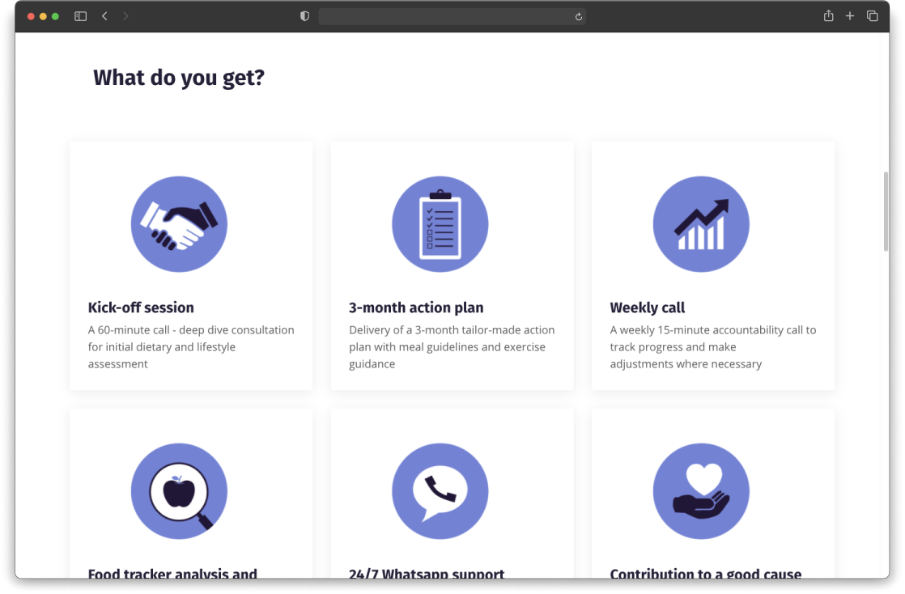
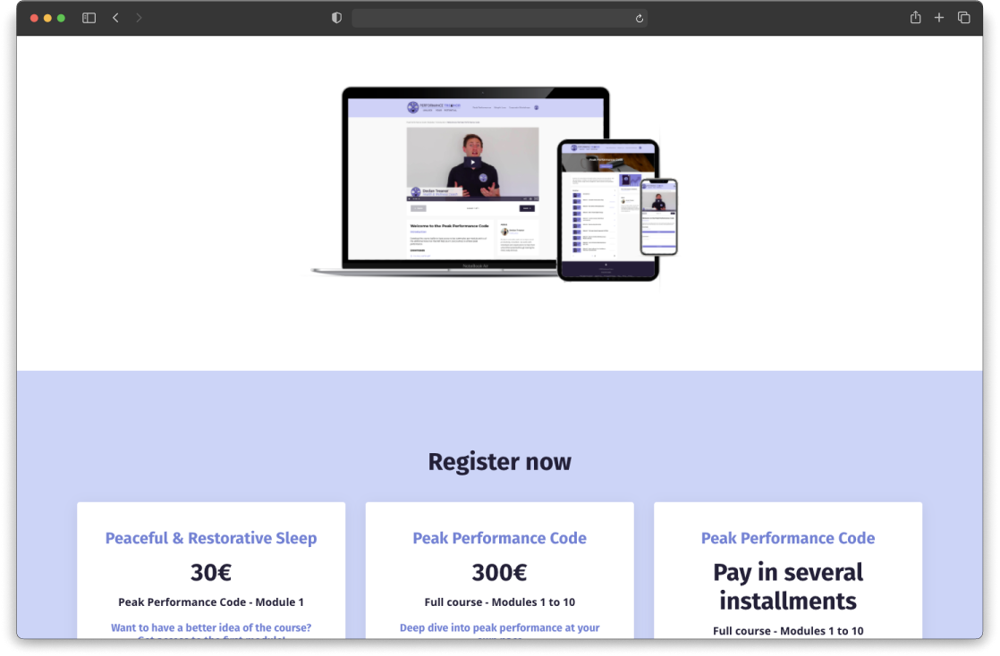
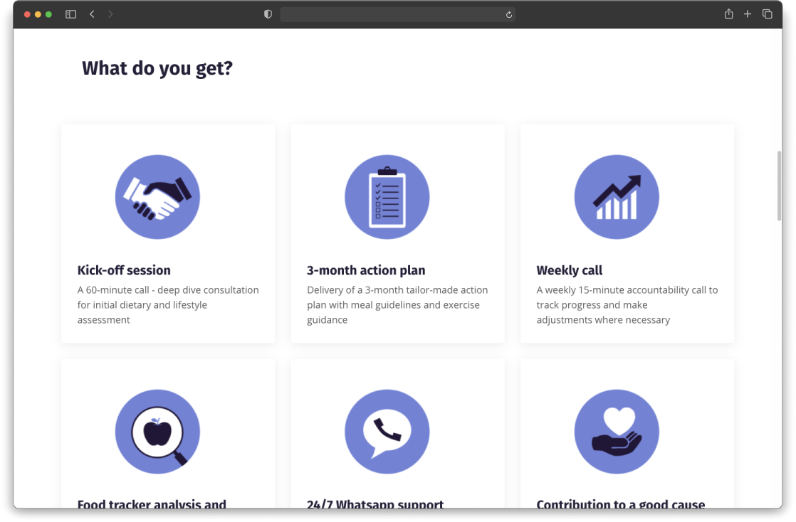
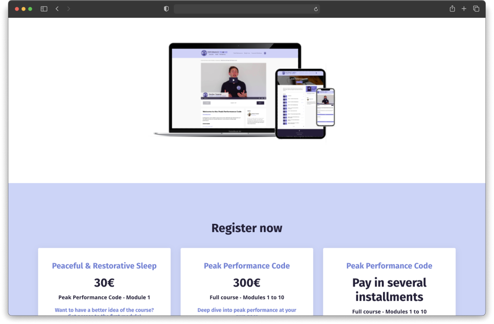
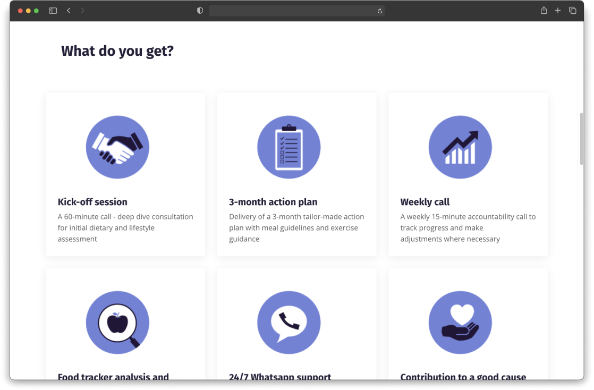
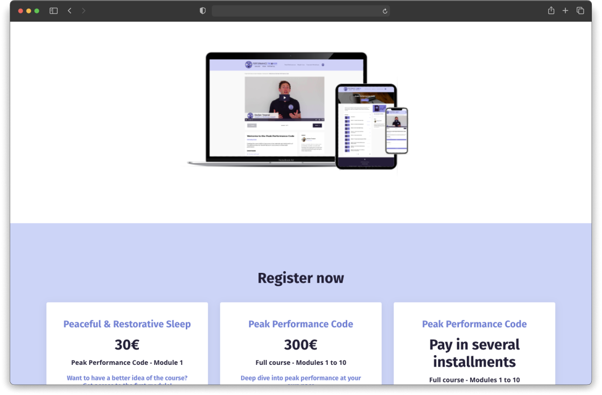

All projects
I did a UX single case study for a fictive airline called FlyUX, in the framework of my UX Design training with the UX Design Institute. It involved researching, designing and prototyping a website and mobile app.
To complete the study, I conducted usability tests, produced affinity diagrams & customer journey maps and eventually delivered wireframes.


The aim of the study was to help a new airline company, FlyUX, design their website and mobile application. I focused on one primary use case for the study: the flight booking process.
1. Research
In this UX case study, as we were starting from scratch, the first phase of the work was to conduct extensive research on the competition through usability testing, competition benchmark, online survey and heuristics evaluation. It enabled me to identify best practices, common user behaviours and pain points they can have when booking flights on airline websites and apps.
2. Analysis
The second phase consisted in making sense of the research data and articulate the problems the software should be solving for users. I used triangulation to have a more accurate understanding. After jotting down all interesting points the research brought up, I grouped them during an affinity diagram session. From there, I made a customer journey map encapsulating each high level step when booking flights and documenting the goals, behaviors and pain points of users.
What clearly came out is that the process of booking flights is quite painful for users, especially when picking fares and coming up to choosing the add-ons. You can have a close look at the customer journey map here.
3. Design
I next defined how the app should be structured and the high level flow for booking flights on the FlyUX website and mobile app while addressing all the issues highlighted in the customer journey map. I used Axure to make flow diagrams, all the way through to payment and confirmation.
From there, I sketched a lot to define a navigation style for the apps and determine how the navigation would behave at different points through the flow. I also sketched screens and screen states depending on the user actions. I found sketching helped me clarify my thoughts through iteration, embody all what came out during research while taking into consideration design patterns.
4. Prototyping
In the last phase, I created medium-fidelity prototypes for the mobile app and website. For this, I used Sketch and InVision. I eventually put together a detailed set of wireframes for the developers who would eventually build the products.
Working on the FlyUX case study was a valuable experience to carry out a UX design process, delve into and hone UX tools and techniques, like usability testing, affinity diagrams, Sketch, Axure, InVision, etc. One of the major learned lessons is always assume you won’t get it right the first time and iterations will be needed. Facilitating usability tests was also a great experience. It was a good challenge to remain neutral and be careful of my language not to influence the behaviour and thought process of the users.
The course gave me a deep insight into UX: from user research all the way through to prototyping and wireframing. It improved my critical thinking and ability to question the need of every element of a user interface and feature of a product. Apart from learning about UX skills and tools, it also taught me the mindset required to create high quality software products.